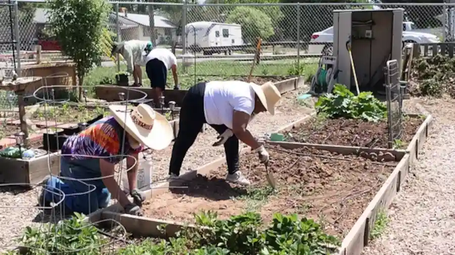

Learn, plant, and grow in our Community Garden
Who we are
Planttitas is a growing community of numOfSubscribers gardeners.
Here, we learn together, share what we discover, and celebrate every little sprout and success.
At Planttita, we believe that gardening is more than planting seeds, it's planting health, joy,
and connection. That's
why our mission goes beyond a simple harvest. We're committed to:
- Growing nutritious, chemical-free food
- Choosing a healthier lifestyle through mindful eating
- Improving our mental well-being by connecting with nature
- Encouraging sustainable habits in everyday life
Whether you're starting your first basil plant or planning a full veggie garden, you're invited to grow
with us. We keep
things simple, supportive, and fun; because everyone can be a Planttita.
Welcome to the garden. Let's grow, learn, and thrive together.